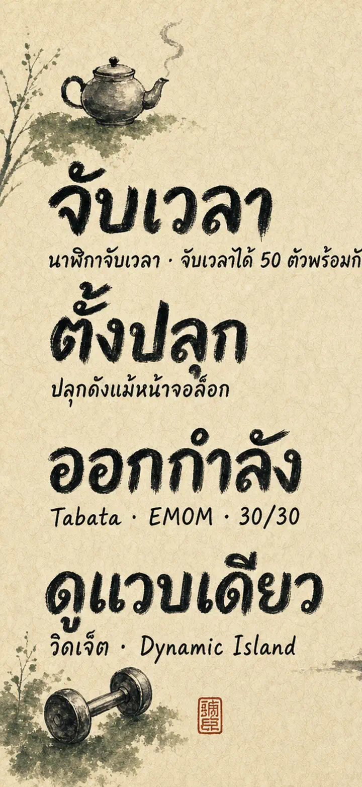
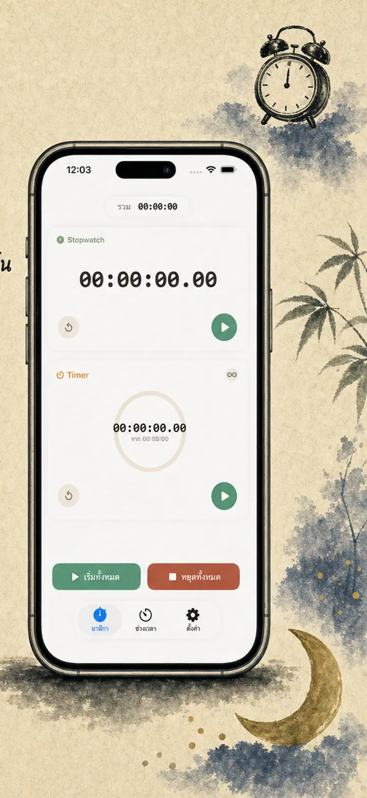
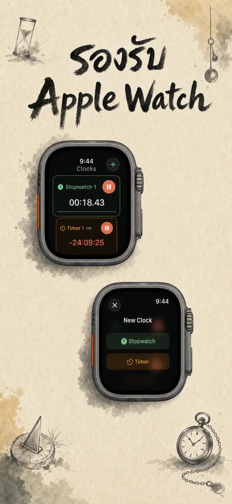
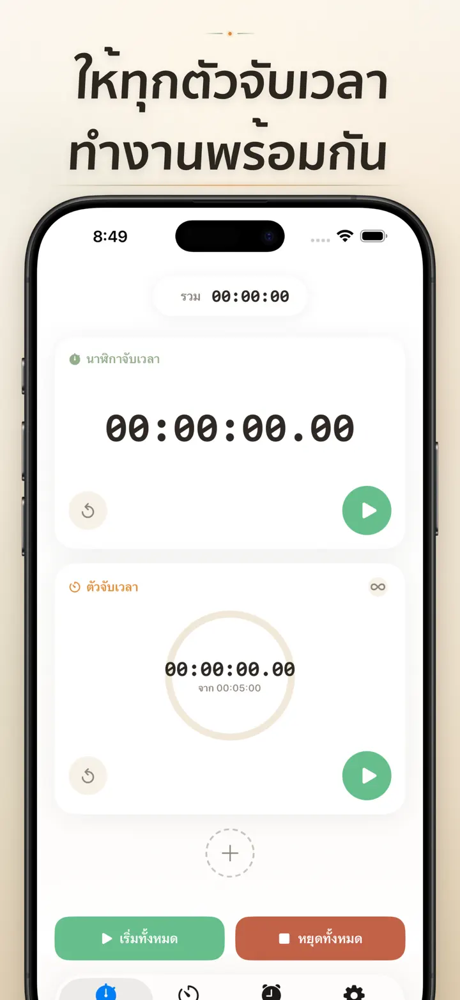
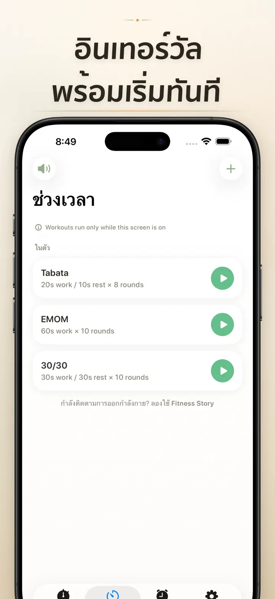
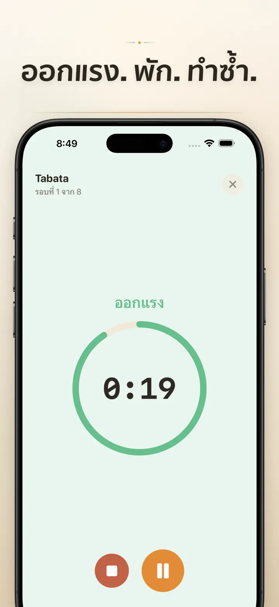
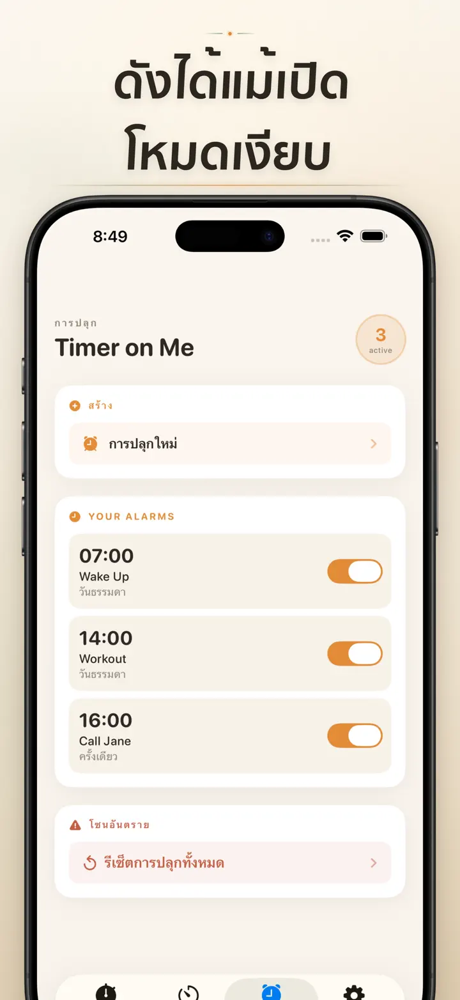

Timer on Me
ตัวจับเวลา นาฬิกาปลุก HIIT
การปลุกตามวันที่มาแล้ว: ตั้งปลุกครั้งเดียวสำหรับวันเวลาในอนาคต พร้อมปลุกประจำ จับเวลา 50 รายการพร้อมกัน HIIT & Tabata และ Apple Watch
ดาวน์โหลดจาก App Store
เกี่ยวกับแอป
Timer on Me คือมัลติตัวจับเวลาและนาฬิกาจับเวลาสำหรับ iPhone, iPad และ Apple Watch สูงสุด 50 ตัวพร้อมกัน เทรนนิ่งแบบ interval ที่แม่นยำ และปลุกที่ดังจริง — แม้ iPhone ล็อกอยู่หรือแอปปิดอยู่
นาฬิกาปลุก
- ปลุกตอนเช้าและแจ้งเตือนพร้อมป้ายและตารางรายวันที่กำหนดเอง
- ขับเคลื่อนด้วย AlarmKit — ดังแม้ iPhone ล็อกอยู่หรือ Timer on Me ปิดอยู่
- ตั้งค่าเลื่อนปลุกได้ (3 / 5 / 9 / 15 / 30 นาที) หรือไม่เลื่อน
- เลือกจากเสียงในตัว หรือนำเสียงของคุณเองมาใช้
- เปิด/ปิดได้ในแตะเดียวจากแท็บนาฬิกาปลุกโดยเฉพาะ
เทรนนิ่งและ INTERVAL
- พรีเซ็ต Tabata, EMOM และ 30/30 พร้อมใช้ — แตะสองครั้งเริ่มเลย
- ตัวแก้ไข interval ของคุณเอง: ทำงาน พัก และรอบในหน่วยนาที/วินาที
- โหมดเทรนนิ่งเต็มจอ เปลี่ยนสีตามเฟส พร้อมตัวเลือกโหมดเงียบ
- หยุดชั่วคราว ข้าม และเล่นต่อกลางเซสชันโดยไม่เสียความคืบหน้า
APPLE WATCH
- แอป watchOS เนทีฟจริง ไม่ใช่แค่สะท้อนจากโทรศัพท์
- นาฬิกาจับเวลาและตัวจับเวลาหลายตัวทำงานพร้อมกันบนข้อมือ
- นาฬิกาจับเวลาแม่นถึงหนึ่งในร้อยของวินาที
- Complication หน้าปัดนาฬิกาเฉพาะ แตะเดียวเริ่มทำงาน
- ทำงานได้ด้วยตัวเอง แม้ไม่มี iPhone อยู่ใกล้
50 ตัวพร้อมกัน
- สูงสุด 50 ตัวจับเวลาและนาฬิกาจับเวลาอิสระในเซสชันเดียว
- เริ่ม หยุด และรีเซ็ตทีละตัวหรือเป็นกลุ่ม
- วนซ้ำอัตโนมัติสำหรับรอบต่อเนื่อง
- ตัวจับเวลานับต่อหลังจากศูนย์เพื่อจับเวลาส่วนเกิน
- แถบความคืบหน้าสี: เหลืองที่ 50% แดงที่ 10%
- ลากเรียงลำดับ ตั้งชื่อได้เอง
การแจ้งเตือนที่เชื่อถือได้
- AlarmKit: ปลุกดังแม้ iPhone ล็อกอยู่หรือแอปปิดอยู่
- Dynamic Island และ Live Activity — ดูความคืบหน้าได้ทันที
- วิดเจ็ตหน้าจอหลัก: เล็ก กลาง ใหญ่
- เสียงในตัว: ระฆัง เสียงนก โทรศัพท์วินเทจ
- แตะฟังก่อนเลือก
- โหมด "เปิดหน้าจอตลอด" สำหรับเซสชันยาว
ปรับแต่งและแชร์
- แสดงหรือซ่อนทศนิยม ยอดรวม และเปอร์เซ็นต์
- บันทึกและเขียนทับพรีเซ็ต เรียกกลับด้วยแตะเดียว
- ส่งออกเป็น CSV, JSON หรือข้อความธรรมดา
- แชร์กับเพื่อนร่วมงาน นักเรียน หรือเทรนเนอร์
สำหรับ iPhone, iPad และ APPLE WATCH
- เลย์เอาต์ปรับตามทุกขนาดหน้าจอ
- Split View บน iPad
- 34 ภาษา
เหมาะสำหรับ
- HIIT, Tabata, CrossFit และเซอร์กิตเทรนนิ่ง
- รอบมวย มวยไทย และศิลปะการต่อสู้
- Pomodoro, GAT/PAT, A-Level และอ่านหนังสือสอบ
- ชงกาแฟ ชา ไข่ลวก ผัดไทย ข้าวผัด และเวลาเตาอบ
- โยคะ พิลาทิส สมาธิ และลมหายใจ
- ซ้อมนำเสนอและฝึกเครื่องดนตรี
- เรียน เวิร์กช็อป และกิจกรรมกลุ่ม
- บอร์ดเกมและค่ำคืนกับเพื่อน
ดาวน์โหลด Timer on Me แล้วคุมทุกนาที — ที่ยิม ที่ทำงาน หรือที่บ้าน
นโยบายความเป็นส่วนตัว: https://masawata.net/privacy-policy.html ข้อกำหนดการให้บริการ: https://www.apple.com/legal/internet-services/itunes/dev/stdeula/
ภาพหน้าจอ






Timer on Me
การปลุกตามวันที่มาแล้ว: ตั้งปลุกครั้งเดียวสำหรับวันเวลาในอนาคต พร้อมปลุกประจำ จับเวลา 50 รายการพร้อมกัน HIIT & Tabata และ Apple Watch
ดาวน์โหลดจาก App Store